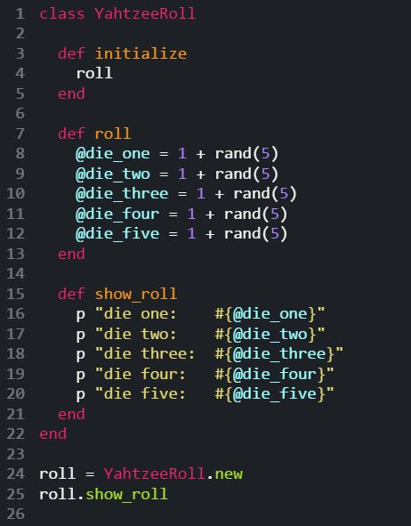

What’s a Class?
Classes are structure that let you organize a group of methods. You’ve actually been dealing with Classes before, even if you didn’t realize it. Everything in Ruby is an object (numbers, strings, arrays, hashes, etc.) and each object is an instance of a class. To create a class, you use the notation ‘class ClassName’. Note that class names are in CamelCase. We’ll look at creating our own class in the YahtzeeRoll example below.
What’s the Initialize Method?
Initialize is a special method in Ruby. When you create a new instance of a class, Ruby calls the object’s initialize method (if it has one). As the name suggests, this method lets you setup (i.e. initialize) the instance of your class with specified code. You also have the option to pass parameters to your initialize method. In the example below, we’ll see how it works.
What’s an Instance Method?
Classes are useful because they allow methods to interact. Instance methods are methods that can only be used on a particular instance of the class. You can also pass instance variables between instance methods. In the example below, we call the #roll instance method on the class YahtzeeRoll.
What’s an Instance Variable?
Classes not only share their methods, but also their variables. Variables that can be passed between methods in a class are called instance variables. You can spot one because they start with a ‘@’. Instance methods are often setup in the initialize method. Take a peek at YahtzeeRoll class below and see if you can spot some instance variables.
Let’s Roll Some Dice!
I created a class called YahtzeeRoll to demonstrate what we've just covered:

This class roles 5 dice.
On line 1, I named the class (remember to use CamelCase for the class name).
On line 3, I created an initialize method. It calls the instance method #roll. This means that when you create an instance of YahtzeeRoll using YahtzeeRoll.new, that instance will immediately run the #roll method.
Take a look at the #roll instance method on line 7. You can see that I created 5 instance variables, one for each of the 5 dice we are rolling (the #rand method creates a random number from 0 to the parameter).
In the #show_roll instance method on line 15, you can see that the instance variables from #roll are passed into #show_roll.
On line 24, I created a new instance of YahtzeeRoll and set it to roll. Notice that the syntax is ClassName.new just like Array.new and Hash.new.
On the next line, I can then call my instance method #show_roll on our new instance of YahtzeeRoll.
Here’s the result:
Let’s breakdown how we got this output. Line 24 created a new instance of class YahtzeeRoll. Creating the instance called our initialize variable, which called our #roll instance method.
On line 25, we then called the #show_roll method on the instance roll. The #show_roll method took the instance variables from the #roll method and the printed them (i.e. showing the outcome of the roll).
Now go forth into the world and create your own classes!